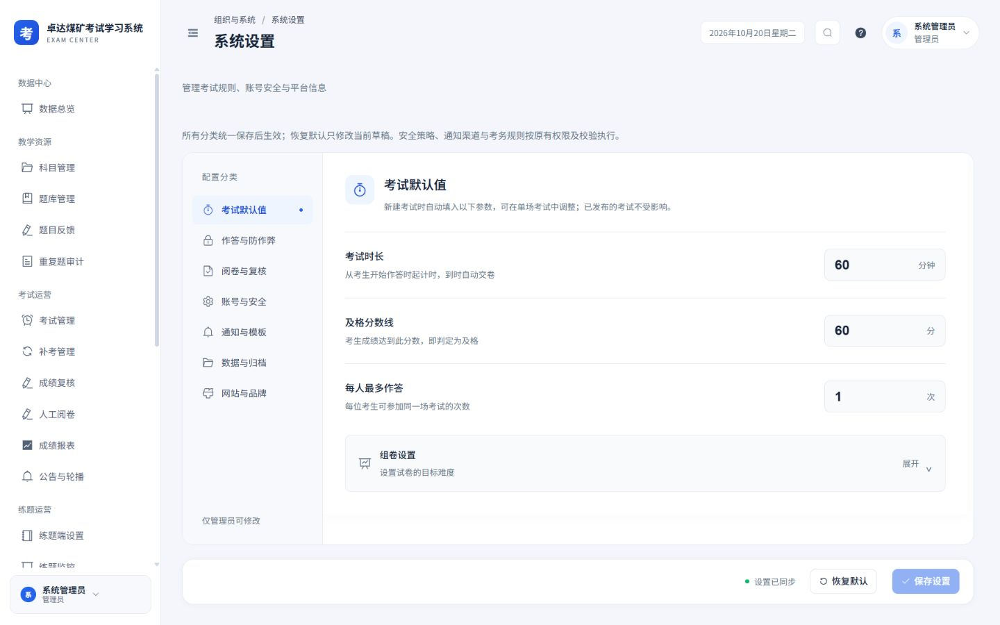
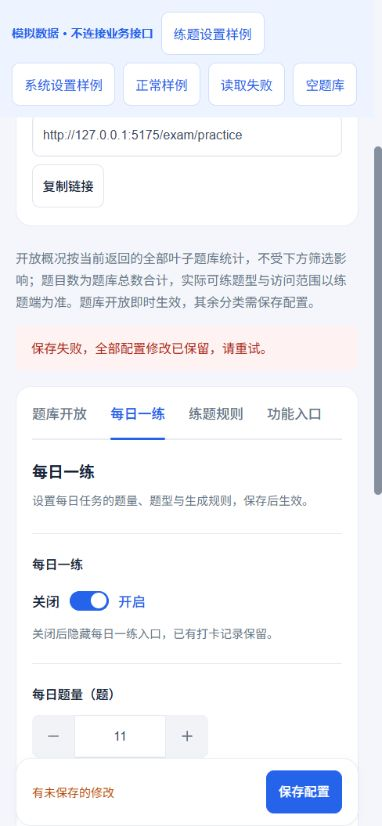

2026-10-20 · Workbuddy 01 · 本轮本地实施：系统设置与练题端设置
设置有明确状态，手机可完整操作
延续白侧栏、浅灰蓝底、蓝色操作及16 px卡片。保留系统七类设置、练题四类设置、所有配置字段与原有取值范围、考务规则、权限和安全能力。
本轮落地
- 练题题库桌面保留表格，900 px以内转单列卡片；长题库名称完整换行，题数、状态与开关分层，空题库仍不可开放。
- 概况明确为当前返回的全部叶子题库，不随列表筛选变化；题目数更名为“开放题库题目总数”，说明实际可练题型和访问范围以练题端为准。加载及读取失败均显示未知，空状态独立。
- 题库单项及批量操作增加重复保护。批量确认开始即锁定筛选、页签、开关和重复请求；取消不写入，失败保留原状态与筛选。批量目标保持全部题库范围，开放时排除空题库。
- 练题配置保存期间锁定关联数值、开关与题型选择；保存失败就地提示并保留全部草稿。数字空值、越界与反向题量范围自动定位对应分类，沿用原后端范围，不增加每日任务的额外约束。
- 系统设置在异步校验开始即锁定重复提交，保留原跨分类错误定位、条件禁用与权限。恢复默认确认期间锁定重复操作，取消保留草稿；恢复仍只修改草稿，统一保存后才生效。
- 配置强制读取失败时保留缓存，但不将缓存误标为本次同步成功；设置表单保持锁定并提供重试。保存失败保留全部分类修改，手机底栏保留同步或未保存状态。
- 两页手机数字加减按钮44×44 px，解决按需加载样式覆盖后按钮变小的问题；同步数字输入框的原生禁用与无障碍语义，恢复编辑后不再残留“已禁用”标记。
- 公共页头未提供操作插槽时不渲染空操作区域，减少无操作页面手机端多余空行。补齐两页桌面、手机、确认弹窗和失败状态设计；系统设计稿支持切换七类配置。
实际应用
以下为本地实际应用及接口。仅查看、切换分类、展开组卷说明和滚动，未保存配置、恢复默认、修改安全策略或开放关闭题库。



实际练题设置桌面 · 实际返回4个开放题库、合计1,237道题（截图时数据）。

失败恢复与确认
以下为实际页面组件和隔离模拟接口；保存失败仅在模拟环境和自动化测试中验证，不连接业务写接口。



验证结果
320×740、390×844、844×390及1440×900视口，覆盖实际页面、系统七类配置、练题分类、长名称、批量确认、默认恢复、空状态与加载失败；最终测量未发现页面横向溢出，手机数字操作及底栏按钮至少44 px。
9个相关测试文件、145项测试通过，覆盖保存与确认锁定、取消不写入、失败草稿保留、空题库限制、批量目标、配置范围、缓存读取失败、数字禁用语义、字段覆盖与共享组件。类型检查、设计覆盖检查、生产构建及差异空白检查通过。
本报告记录本轮本地实现，其他页面与历史验收记录保留。